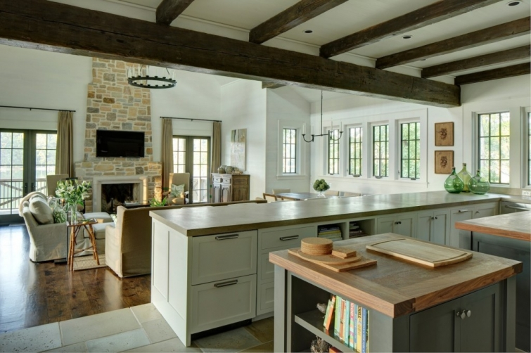
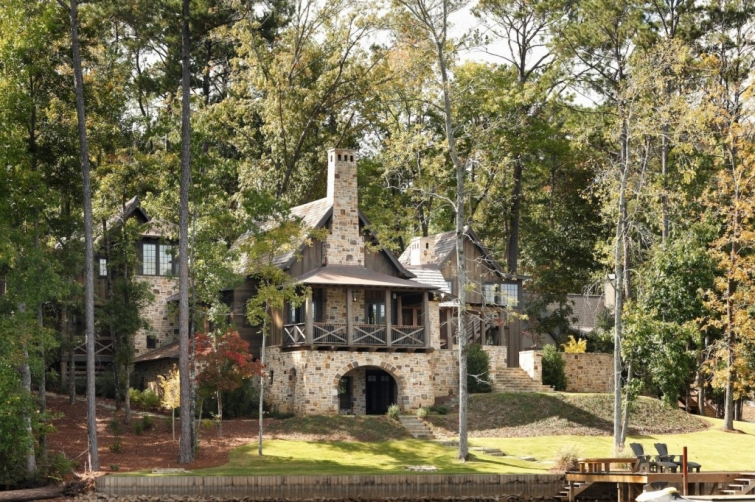
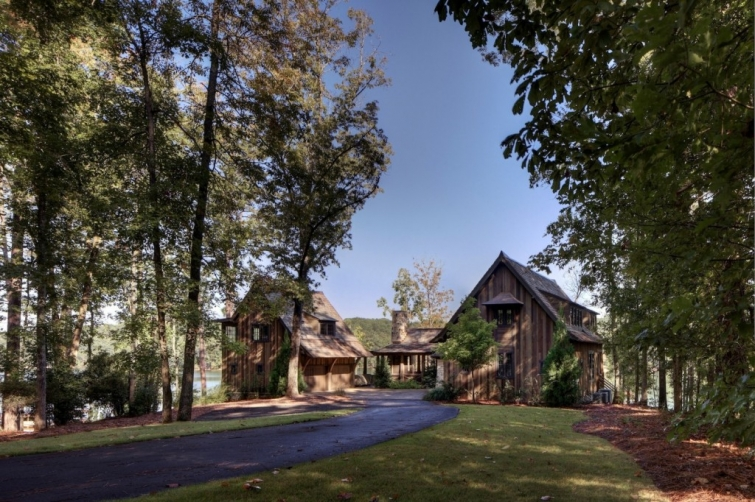

.png)
.PNG)
.PNG)
.PNG)
.PNG)
.PNG)
.JPG)
.JPG)
.PNG)
.PNG)


source
Another weekend is upon us. Did this week fly by or what??? I thought we were just talking about staying at The Point in the Adirondacks. Goodness. Well, I have a few more lake houses and another design firm to share with you today. Raise your hand if you have seen the work of Dungan-Nequette? Their projects have been featured in many publications, so you may have seen some of these. The kitchen above is inside the home pictured below.
source
It is located on Lake Martin in Alabama and was designed by Dungan-Nequette. Don’t you just love that rustic board and batten with stone exterior? The interior seems to go in a more modern direction.
source
Here is another lake house for which they did design work. I believe they added on to an existing home there for this one. It is nicknamed Seven Sticks for the seven pine trees that were removed for the addition. They “honored”those trees by using seven telephone poles to support the new part of the home.

The decor in this new room is not exactly my style, but isn’t the view of the lake there magnificent?? All those windows! It was featured in Southern Living magazine, and you can read more about the house here if you would like.
Here is another rustic but refined building designed by Dungan-Nequette. This is the Springhouse Restaurant at Lake Martin.
A giant stone fireplace is at the center of the 10,000 sq. ft. facility.
And just for fun, here is a look at their dessert menu. 🙂
Lake houses are not the only things this design firm dreams up. Here is one of the beautiful farmhouses in their porfolio. This one started from a very small and simple bunkhouse on the property. (You can read more about it here in a Southern Living article.)
Again we see another rustic room adorned with many rough boards. (I am loving the plaid on those chairs!)
Now this is a porch. Doesn’t it look so peaceful? Just hand me a glass of sweet tea. 🙂
One more farmhouse designed by Dungan-Nequette you just have to see.
This very unique one was featured in Garden and Gun in April, 2009. A 100 year old barn was taken apart and moved from Pennsylvania to Alabama, and the family hired someone from Pennsylvania to oversee the reconstruction.
The entire house is heated by the large Russian Stove in the center of the great room below, and many of the decorations in the house were found on site (like the wagon frame suspended above the kitchen.) Love the swing suspended there near the fireplace!
Pretty neat, huh? Before I leave you today, let me share with you a little history on this design firm. Dungan-Nequette started out doing architectural projects working out of a small sunroom. They grew and grew, and after a period of time (and many more projects) they started Tracery Interiors to provide consistency between the interior spaces and the architectural details of their buildings. It made sense that the two should mesh. Then these creative folks somehow got into designing advertisements, graphic design,and websites, (very creative people) and their branding company, The G Brand was born. And that catches you up to where they are today.
I think I have overdosed you on rustic rooms and buildings for a little while. Next week we will venture in a different direction, and fingers crossed, I get the gallery wall project finished this weekend to show you on Monday. I hope your weekend is filled with a visit to a lake, a dinner at a great restaurant (delicious dessert included!), or a peaceful autumn ride through the countryside (maybe even a hayride?) 🙂
Until next time…


.PNG)
Love looking at all your beautiful decorating! My question is this: Did you make the sign/canvas in your sons’ room with the 72 on it? My son is playing football this year, coincidentally 72 is his jersey number, 🙂 and I would love to make one for him. Are there instructions on this site of how you made it or where you bought it?
Thanks! 🙂
——————————————————————
Hi Terri!
I am so happy you enjoy seeing all the rooms on the blog. I “sort of” made that sign from the boys’ room (it is going to live somewhere else soon…I hope.) It was a square metal chalkboard from Pottery Barn Kids. It was red at one point, but I painted it yellow, and used a black “chalk pen” to write the 72 on it. I imagine the same thing could be done though with a canvas – paint it yellow and use the black chalk pen to write on it. It would have a rougher texture, but I think it would still work the same way. Very easy.
Kelly
Kelly,
Thank you for the information, eye candy and inspiration. I love it all, as usual. My favorite is that last barn. What an inspiring story and beauty that barn is. This weekend has been full of Homecoming activities , shopping, cleaning and organizing while keeping up with sports, grades and entertaining. I can’t wait to see your gallery wall.
——————————————————————–
I am glad you read the story with the barn. It was such a creative project from start to finish. You had one busy busy weekend Dawn. Hope next weekend is more relaxing for you. (My next one is my busy one.)
Kelly
Love these pics! The one with the windows with the peaked end was a dream view to me!
We are touring a bit of the south this week, visiting our daughter and family in Texas, seeing San Antonio, New Orleans and stops along the way towards home. Beautiful weather so far, and went to a pumpkin Patch with the G.K’ s, then daughter and I went junking and antiquing!
——————————————————————
That certainly was a dream view!! Sounds like you are having a great trip and going to many places Marianne. Hope you found something wonderful to buy at the antique shops.
Happy traveling!
Kelly
Thanks again for showing us some wonderful places. I can’t wait to see the gallery wall. Have a wonderful weekend!
Sue
—————————————————————-
I am happy you liked all the homes, Sue. Our weekend was busy but productive! 🙂
Kelly
Kelly,
I loved the exterior of the first home, and the location. But the farmhouse was my favorite for interior design. Maybe I could have the farmhouse moved to the lake…would that make it a lake house or is there more than location to the architecture of each home? You always give us the best eye candy.
I hope you’re having a good weekend and that your wall gallery is going up as we speak. 🙂
xo,
Karen
——————————————————————-
Hmmm…good question. I’ve always thought of “farmhouse” really as a style and “lakehouse” as a location. Who knows? I guess it would be a farmhouse styled lake house. 🙂
Hope you enjoyed your weekend!
Kelly
now you’re talking about my neck of the woods….Lake Martin! i don’t recognize the 1st house you featured but you can bet i’ll be looking for it next spring/summer when we’re at the lake…and the restaurant? i don’t recall hearing about it and i think it’s because it’s on the Alex City “side” of the lake…i’m going to have a go there soon!
what a gorgeous day here…since Auburn is off this weekend we’re going to get out and enjoy this weather…maybe even ride up toward Alex City
——————————————————————
YES..most definitely your neck of the woods! You should search for that home AND the restaurant. I hope you enjoyed your weekend even if it didn’t involve Auburn football. LOL
Kelly
These rustic houses remind me of Fairy Tale houses…would not mind owning one myself!!
—————————————————————–
I think I could be forced into living in one of them too, Arlene. That one with all the windows overlooking the lake would be my choice.
Kelly
My granddaughter Emery is going to flip out when I show her that swing in the house! My daughter and SIL used to make fun of me when I kept messing up and referring to their Garden and Gun magazines as ‘that Guns and Roses magazine”.
Have a great fall weekend, Kelly!
——————————————————————
I think like Emery. A swing inside a house would be such a fun thing to have. “Guns and Roses”…hilarious!!
Hope your weekend was a fun one Katrina. 🙂
Kelly
Kelly, How fun to see the remodeled barn from Garden and Gun! I’d never heard of that publication! I was thinking that the barn house would be so awesome for a Christmas party…all that open space! Always enjoy the interiors you feature. Happy weekend to you!
——————————————————————–
Oh you need to find a copy of Garden and Gun, Gracia! You will enjoy it (but it has a very Southern vibe.) Wouldn’t it be fun to decorate that barn for Christmas!!
Kelly
Oh my goodness, that barn is awesome. How much fun would that be to decorate it seasonally? That’s neat to learn that these creative people are behind Tracery Interiors- I admire their whole aesthetic. Looking forward to having a delicious dessert this weekend, per your suggestion. 🙂 Hope you have a wonderful weekend!
———————————————————————
I agree – that barn would be wonderful for decorating for holidays. Can’t you just picture a huge Christmas tree there? Hope you had a delicious dessert (and ate some for me as well!)
Kelly
This was so much fun… and inspirational. I love the warmth. I saw Garden and Gun for the first time last year at our friends house (he’s an architect in Florida and knew I would like it).
I’m excited to see your gallery wall. Have a great weekend!!
—————————————————————–
Garden and Gun is a great magazine with such a wide range of topics. I think there is something in it for every member of my family! I usually love any of the food related articles. 🙂
Hope your weekend was a good one.